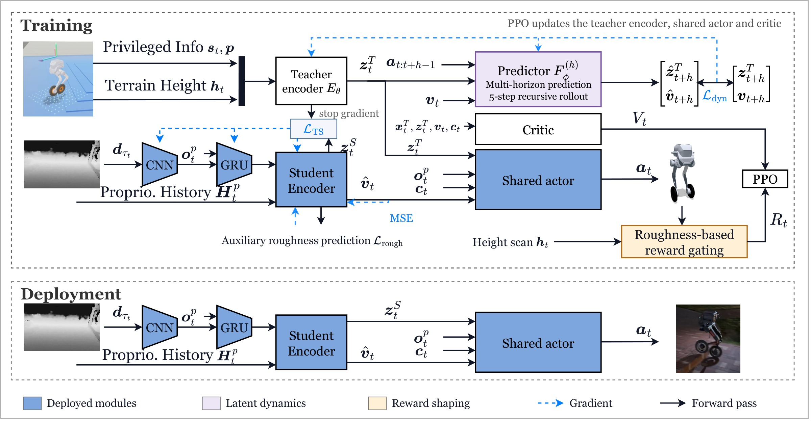
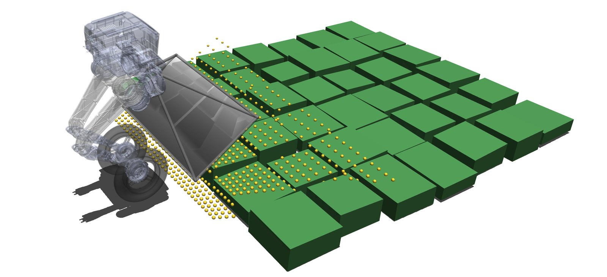
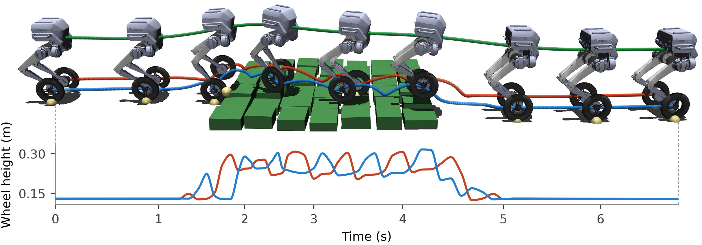
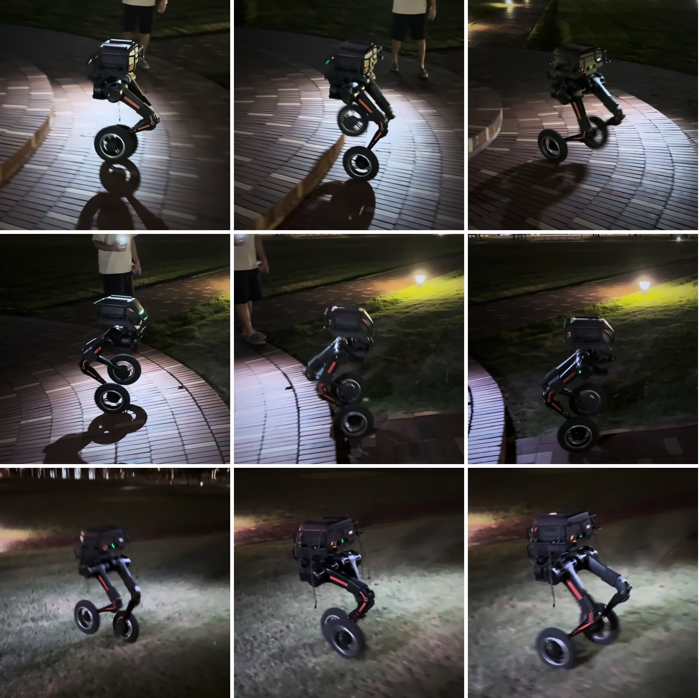

One perceptive policy that rolls, steps, climbs stairs and side-steps, with no mode switching.
Video
Abstract
Wheeled-biped robots combine efficient rolling with legged mobility, but coordinating the wheeled-legged motion for omnidirectional mobility and terrain adaptation remains challenging. We present WheelStrider, a reinforcement learning framework that learns a unified perceptive policy for omnidirectional and terrain-adaptive wheeled-biped locomotion without explicit mode commands. A privileged teacher guides a recurrent student that combines proprioceptive history with onboard depth. A roughness-based reward gate encourages forward rolling on smooth ground and wheel lifting on rough terrain. Latent dynamics modeling regularizes the teacher representation through action-conditioned prediction of future latent states and base velocity, improving latent predictability and teacher–student alignment. We validate WheelStrider in simulation and in real-world trials on TRON1: the same policy rolls on flat ground, steps over uneven terrain, climbs stairs and steps sideways on grass.
Method

Perceptive teacher–student
A privileged teacher guides a student that sees the terrain ahead through onboard depth.
Roughness-gated rewards
Training rewards favor rolling on smooth ground and lifting the wheels on rough terrain.
Latent dynamics modeling
Predicting future latent states shapes a representation the student can imitate more easily.

Simulation
Roll → step → roll across terrains

Ten terrains in one run
Omnidirectional locomotion
Real World
TRON1 with onboard depth, played at real-time speed
Rolling and stepping over obstacles
Outdoor stairs
Lateral stepping on grass
Rolling on flat ground and terrain transitions

BibTeX
@misc{wheelstrider2026,
title = {WheelStrider: Sim-to-Real Learning Unified Perceptive
Hybrid Locomotion for Wheeled Bipeds},
author = {Anonymous Authors},
note = {Under review},
year = {2026}
}